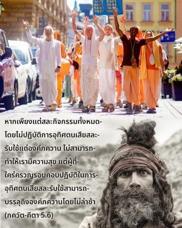
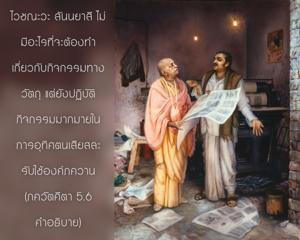

หากเพียงแต่สละกิจกรรมทั้งหมดโดยไม่ปฏิบัติการอุทิศตนเสียสละรับใช้แด่องค์ภควานฺจะไม่สามารถทำให้เรามีความสุข แต่ผู้ที่ใคร่ครวญรอบคอบปฏิบัติในการอุทิศตนเสียสละรับใช้จะสามารถบรรลุถึงองค์ภควานได้โดยไม่ล่าช้า


มี สนฺนฺยาสี หรือผู้ปฏิบัติตนสละโลกวัตถุอยู่สองประเภท มายาวาที สนฺนฺยาสี ปฏิบัติในการศึกษาปรัชญา สางฺขฺย ขณะที่ ไวษฺณว สนฺนฺยาสี ปฏิบัติในการศึกษาปรัชญา ภาควต ซึ่งให้คำอธิบาย เวทานฺต-สูตฺร อย่างถูกต้อง มายาวาที สนฺนฺยาสี ศึกษา เวทานฺต-สูตฺร เหมือนกันแต่ใช้คำอธิบายของพวกตนเรียกว่า ศารีรก-ภาษฺย เขียนโดย ศงฺกราจารฺย นักศึกษาของสถาบัน ภาควตมฺ ปฏิบัติในการอุทิศตนเสียสละรับใช้องค์ภควานฺตามกฎเกณฑ์ของ ปาญฺจราตฺริกี ดังนั้น ไวษฺณว สนฺนฺยาสี จึงมีการปฏิบัติรับใช้ทิพย์อย่างมากมายแด่องค์ภควานฺ ไวษฺณว สนฺนฺยาสี ไม่มีอะไรที่จะต้องทำเกี่ยวกับกิจกรรมทางวัตถุ แต่ยังปฏิบัติกิจกรรมมากมายในการอุทิศตนเสียสละรับใช้องค์ภควานฺ แต่ มายาวาที สนฺนฺยาสี ปฏิบัติในการศึกษา สางฺขฺย และ เวทานฺต และได้แต่คาดคะเน ไม่สามารถได้รับรสแห่งการรับใช้ทิพย์แด่องค์ภควานฺ เพราะว่าการศึกษาเช่นนี้น่าเบื่อมาก บางครั้งจะเบื่อหน่ายต่อการคาดคะเน พฺรหฺมนฺ แล้วจึงมาพึ่ง ภาควตมฺ โดยปราศจากความเข้าใจที่ถูกต้อง ดังนั้นการศึกษา ศฺรีมทฺ-ภาควตมฺ ของพวกนี้จึงมีปัญหา การคาดคะเนอย่างลมๆแล้งๆและการตีความที่ไร้รูปลักษณ์ด้วยวิธีที่ผิดธรรมชาติเป็นสิ่งที่ไร้ประโยชน์โดยสิ้นเชิงสำหรับ มายาวาที สนฺนฺยาสี ในขณะที่ ไวษฺณว สนฺนฺยาสี ผู้ปฏิบัติในการอุทิศตนเสียสละรับใช้ได้รับความสุขอยู่ตลอดเวลาในการปฏิบัติหน้าที่ทิพย์ และรับประกันได้ว่าในที่สุดจะบรรลุถึงอาณาจักรแห่งองค์ภควานฺ มายาวาที สนฺนฺยาสี บางครั้งตกต่ำลงจากวิถีแห่งความรู้แจ้งแห่งตน และเข้าไปร่วมกับกิจกรรมทางวัตถุ เช่น การทำทานช่วยเหลือเพื่อนมนุษย์ และสละความเห็นแก่ตัวซึ่งเป็นกิจกรรมทางวัตถุ ดังนั้นผลสรุปคือ ผู้ที่ปฏิบัติในกิจกรรมของกฺฤษฺณจิตสำนึกสถิตในตำแหน่งที่ดีกว่าพวก สนฺนฺยาสี ที่ปฏิบัติเพียงแค่คาดคะเนว่าอะไรคือ พฺรหฺมนฺ และอะไรไม่ใช่ พฺรหฺมนฺ ถึงแม้ว่าหลังจากหลายต่อหลายชาติพวกนี้จะกลายมาเป็นกฺฤษฺณจิตสำนึก